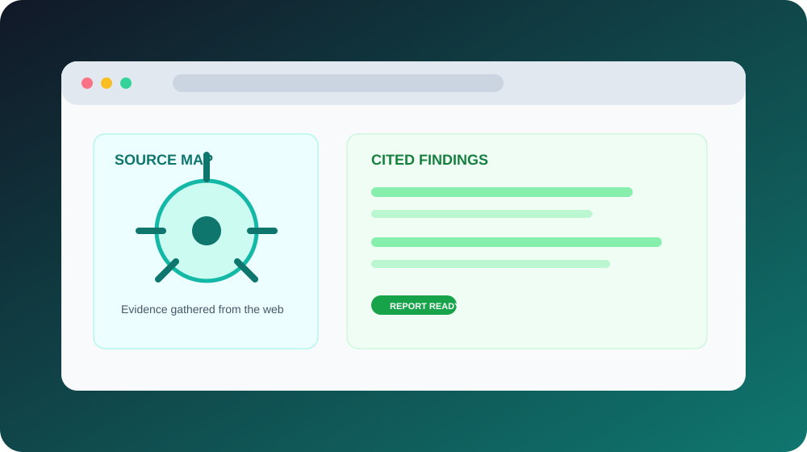

Web Analyst Agent
Give it a website and an objective. The agent selects a research playbook, gathers evidence, and returns a report with cited findings that can be reused later.

Research should compound.
Web research tools often treat every question as a blank slate. This agent keeps a growing library of skills so a workflow learned during one analysis can improve the next one.
The interface shows the run as it happens: stages, tool calls, elapsed time, models used, token counts, and the cited evidence behind the final answer.
From a link to a research brief.
Objective routing
Choose a starter playbook or let the agent select the best skill for the request.
Skill library
Research patterns are saved, categorized, previewable, and reusable across runs.
Evidence trail
Reports preserve sources and findings so conclusions can be inspected instead of trusted blindly.
Shareable output
Copy or download the finished report as Markdown for use in a brief or decision document.
A research loop that gets better.
The architecture makes the skill library a first-class product surface. The agent can write or improve a skill when no existing playbook fits, while the user retains control over that behavior.